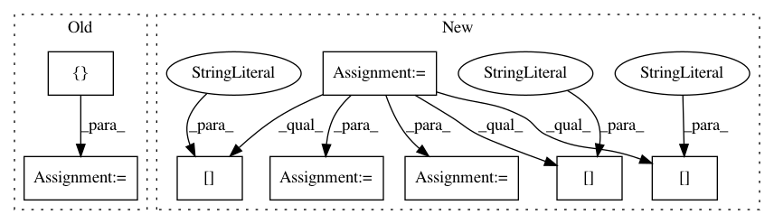

f2f419b89221602dc31c69de32df1cba281db481,upsetplot/tests/test_data.py,,test_from_contents,#,90
Before Change
@pytest.mark.parametrize("typ", [set, list, tuple, iter])
@pytest.mark.parametrize("id_column", ["id", "blah"])
def test_from_contents(typ, id_column):
contents = {"cat1": typ(["aa", "bb", "cc"]),
"cat2": typ(["cc", "dd"]),
"cat3": typ(["ee"]),
}
empty_data = pd.DataFrame(index=["aa", "bb", "cc", "dd", "ee", "ff"])
out = from_contents(OrderedDict(contents), data=empty_data,
id_column=id_column)
out2 = from_memberships(memberships=[{"cat1"},
After Change
def test_from_contents(typ=set, id_column="id"):
contents = {"cat1": {"aa", "bb", "cc"},
"cat2": {"cc", "dd"},
"cat3": {"ee"},
}
empty_data = pd.DataFrame(index=["aa", "bb", "cc", "dd", "ee"])
baseline = from_contents(OrderedDict(contents), data=empty_data,
id_column=id_column)
// data=None
out = from_contents(OrderedDict(contents), id_column=id_column)
assert_frame_equal(out.sort_values(id_column), baseline)
// unordered contents dict
out = from_contents({"cat3": contents["cat3"],
"cat2": contents["cat2"],
"cat1": contents["cat1"]},
data=empty_data, id_column=id_column)
assert_frame_equal(out.reorder_levels(["cat1", "cat2", "cat3"]),
baseline)
// empty category
out = from_contents({"cat1": contents["cat1"],
"cat2": contents["cat2"],
"cat3": contents["cat3"],
"cat4": []},
data=empty_data,
id_column=id_column)
assert not out.index.to_frame()["cat4"].any() // cat4 should be all-false
assert len(out.index.names) == 4
out.index = out.index.to_frame().set_index(["cat1", "cat2", "cat3"]).index
assert_frame_equal(out, baseline)
In pattern: SUPERPATTERN
Frequency: 3
Non-data size: 8
Instances
Project Name: jnothman/UpSetPlot
Commit Name: f2f419b89221602dc31c69de32df1cba281db481
Time: 2019-05-30
Author: joel.nothman@gmail.com
File Name: upsetplot/tests/test_data.py
Class Name:
Method Name: test_from_contents
Project Name: nilmtk/nilmtk
Commit Name: 571ac6df8cbd237abf09b85da7c99e2fad3ed280
Time: 2014-01-09
Author: jack-list@xlk.org.uk
File Name: nilmtk/dataset/dataset.py
Class Name: DataSet
Method Name: describe
Project Name: GoogleCloudPlatform/python-docs-samples
Commit Name: 63ea9b2637ce8e478c854b68d8af7ca42e19abcf
Time: 2020-09-22
Author: 35782177+melaniedejong@users.noreply.github.com
File Name: iam/api-client/quickstart.py
Class Name:
Method Name: quickstart